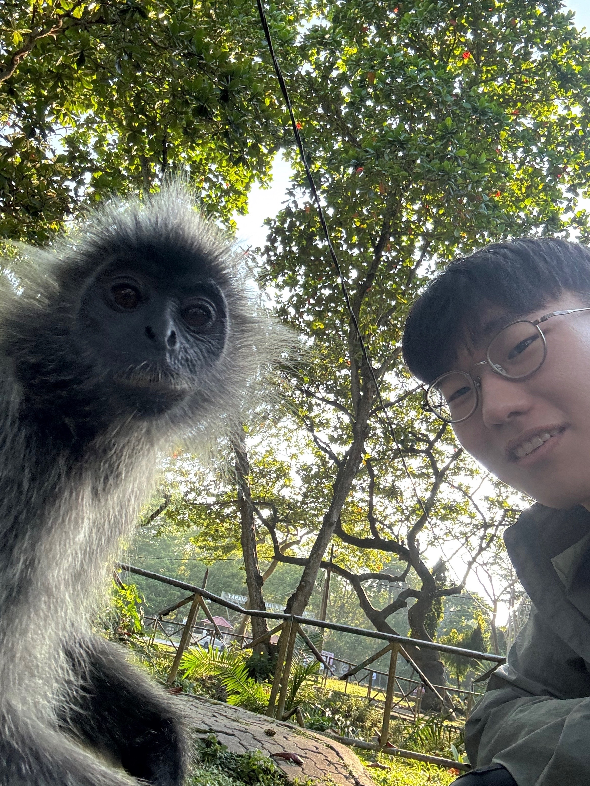
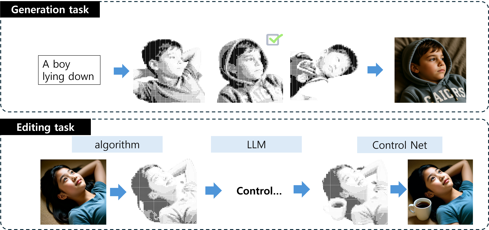
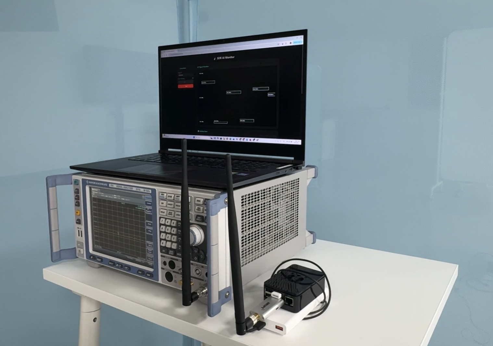

AI Engineer / Researcher
정의되지 않은 문제를 찾고, 그 문제를 구체화하는 것에 강합니다. 모든 기술의 사용에는 목적이 있어야 한다고 생각하며, “그냥”을 경계합니다. 빠르게 결과물을 내고 결과를 토대로 문제점을 파악하여 업그레이드시키는 것을 좋아합니다.
Email: shjo1227@gmail.com

2025.09 - 현재

2025.02 - 2025.09